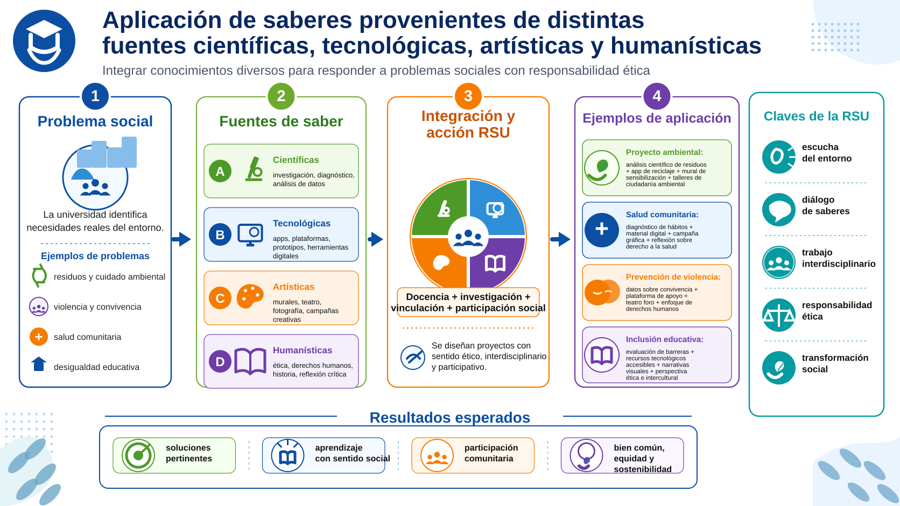

Pensar la universidad como bien público significa reconocer que su existencia no se justifica únicamente por la formación de profesionistas o por la producción de conocimiento especializado, sino por su contribución al bienestar colectivo, la justicia social, la equidad, la democracia, la cultura de paz y el desarrollo humano sostenible. Desde esta perspectiva, la universidad no pertenece solo a quienes estudian o trabajan en ella; pertenece simbólica, ética y socialmente a la comunidad a la que sirve. Su tarea consiste en formar personas, producir conocimiento y vincularse con la sociedad para atender problemas reales.
La universidad latinoamericana ha tenido que preguntarse cómo recuperar el papel social que le corresponde como constructora de conocimiento y como formadora de profesionistas comprometidas y comprometidos con nuevas formas de sociedad basadas en la justicia, la equidad y la fraternidad. En este marco surge la Responsabilidad Social Universitaria como una manera de vincular la misión e identidad universitaria con sus responsabilidades éticas, educativas, sociales, ambientales y políticas.
La universidad como bien público se opone a la idea de concebir la educación superior como una mercancía o como un servicio privado orientado exclusivamente al mercado. Herrera (2009), señala que existen tensiones entre dos formas de comprender la educación superior: por un lado, la perspectiva que la entiende como bien público, vinculada con la solidaridad y la cooperación; por otro, la perspectiva que la orienta hacia la privatización, la integración con el sector empresarial y la atención prioritaria al mercado. Esta tensión sigue siendo central para comprender el lugar de la universidad en la sociedad contemporánea.
Desde la lógica del bien público, la universidad debe responder a las necesidades sociales sin perder su autonomía ni reducirse a una función instrumental. Esto significa que no basta con formar personas “empleables”; es necesario formar sujetos capaces de comprender críticamente su realidad, actuar con responsabilidad ética y participar en la transformación de su entorno. Por ello, la universidad te apoyará para sostener una relación viva con la sociedad: escuchar sus demandas, comprender sus conflictos, participar en la solución de problemas y rendir cuentas sobre sus impactos.
La conciencia social universitaria surge precisamente de esta comprensión. Una universidad con conciencia social sabe que sus decisiones, programas, investigaciones, prácticas docentes, modelos de gestión y formas de vinculación producen efectos concretos en la vida de las personas. Esta conciencia implica reconocer que la universidad no es neutral: puede contribuir a reproducir desigualdades, exclusiones y privilegios, o puede orientar su quehacer hacia la ampliación de derechos, la inclusión social y el bienestar común.
No debes entender la Responsabilidad Social Universitaria como una actividad adicional, voluntaria o filantrópica, sino como una dimensión constitutiva de tu vida universitaria. La RSU implica que la institución tome conciencia de sí misma, de su entorno y del papel que desempeña en ese entorno. Supone superar una mirada egocéntrica de la universidad para comprenderla como parte del entramado social, como un actor que no sustituye al Estado ni a las organizaciones sociales, pero que sí participa en la construcción de proyectos colectivos.
Por ello, la RSU no se limita a “ayudar” a la sociedad desde fuera. Más bien, propone una relación horizontal, participativa y corresponsable. La universidad no debe colocarse como centro absoluto del saber, sino como parte de una comunidad más amplia donde existen distintos actores, necesidades, experiencias y conocimientos. Esta perspectiva obliga a transformar la pregunta “¿qué puede hacer la universidad por la sociedad?” en una pregunta más profunda: ¿cómo puede la universidad construir, junto con la sociedad, respuestas justas, pertinentes y sostenibles?
Los documentos también destacan que la RSU debe orientar a las universidades hacia una clara conciencia de su misión: contribuir al desarrollo humano y sustentable, la equidad, la inclusión social, los derechos humanos y la cultura de paz. Para lograrlo, la universidad necesita alinear sus procesos de docencia, investigación, extensión y gestión con esa misión, dirigir adecuadamente sus recursos humanos, relacionales, intelectuales, tecnológicos y económicos, y asumir la responsabilidad de sus impactos.
Así, la universidad como bien público no puede encerrarse en la producción académica ni limitarse a transmitir contenidos. Debe convertirse en un espacio de formación ciudadana, deliberación democrática, producción de conocimiento socialmente pertinente y construcción de alternativas ante los problemas de su tiempo. Esto implica atender desafíos como la pobreza, la violencia, la intolerancia, el analfabetismo, el hambre, el deterioro ambiental y las enfermedades, tal como se recoge en la discusión latinoamericana sobre el compromiso social universitario.
La conciencia social universitaria también te exige observar y evaluar los impactos internos y externos de la institución. Internamente, la universidad debe preguntarse qué tipo de comunidad forma, qué valores reproduce, qué relaciones laborales promueve, cómo atiende la diversidad y qué experiencias de aprendizaje ofrece. Externamente, debe preguntarse cómo incide en el territorio, qué problemas sociales ayuda a comprender, con quién dialoga, a quién beneficia su conocimiento y qué efectos tienen sus proyectos en las comunidades.
La universidad entendida como bien público es aquella que entiende su misión como una responsabilidad ética frente a la sociedad. Su conciencia social se expresa en la capacidad de reconocer su impacto, escuchar a sus grupos de interés, participar en la solución de problemas colectivos y formar profesionales que tengan compromiso con el bien común. La RSU, en consecuencia, es el marco que permite articular formación, investigación, extensión y gestión en torno a una pregunta fundamental: ¿cómo hacer que el conocimiento universitario contribuya a una sociedad más justa, equitativa, democrática, sostenible e incluyente?
- Villar, Javier (s.f). Responsabilidad Social Universitaria: nuevos paradigmas para una educación liberadora y humanizadora de las personas y las sociedades.
- REDIVU – Red Latinoamericana de Compromiso Social y Voluntariado Universitario – Biblioteca Virtual.
- Beltrán-Llevador José, Íñigo-Bajo, Enrique y Mata-Segreda Alejandrina (2014). En La responsabilidad social universitaria, el reto de su construcción permanente.
- Revista Iberoamericana de Educación Superior, N. 14, V., 3-18.
Te recomendamos ver estos videos para profundizar sobre este tema:
Aplicación de saberes provenientes de distintas fuentes científicas, tecnológicas, artísticas y humanísticas, en el marco de la Responsabilidad Social Universitaria.
La aplicación de saberes en el marco de la RSU parte de una premisa fundamental: No podrás comprender ni resolver los problemas sociales desde una sola disciplina ni desde una única forma de conocimiento. La desigualdad, la violencia, la exclusión, el deterioro ambiental, la pobreza, la salud pública, la discriminación o la falta de participación democrática son fenómenos complejos que requieren la articulación de saberes científicos, tecnológicos, artísticos, humanísticos, comunitarios y territoriales.
Desde esta perspectiva, aplicar saberes no significa trasladar mecánicamente conocimientos académicos hacia la sociedad. Significa construir respuestas pertinentes a partir del diálogo entre distintas fuentes de conocimiento. El saber científico aporta métodos de investigación, análisis de datos, construcción de explicaciones y evaluación rigurosa de problemas. El saber tecnológico permite diseñar herramientas, procesos, plataformas, innovaciones y soluciones prácticas. El saber artístico abre formas sensibles, simbólicas y creativas de comprender la experiencia humana. El saber humanístico aporta reflexión ética, histórica, filosófica, cultural y política. Todos estos saberes, articulados con los conocimientos comunitarios fortalecen la pertinencia social de la universidad.
Los autores revisados señalan que la RSU debe asegurar la congruencia entre la misión universitaria y sus procesos de docencia, investigación, extensión y gestión. Esto quiere decir que la aplicación de saberes no debe ser marginal ni improvisada, sino integrada curricular e institucionalmente. La universidad socialmente responsable necesita modelos educativos, programas de ética aplicada, metodologías pedagógicas, procesos evaluativos, indicadores, balances sociales y mecanismos de rendición de cuentas que permitan verificar si sus acciones realmente contribuyen al bien común.
En este marco, la aplicación de saberes debe comenzar por el diagnóstico del contexto social. No podrás intervenir responsablemente una realidad que no conoces. Por eso, la universidad debe promover procesos de observación, escucha, análisis y evaluación de necesidades junto con actores internos y externos. Villar (s.f), destaca la importancia de generar una cultura de observación y escucha que permita diagnosticar y evaluar procesos, acciones e impactos cognitivos, educativos, sociales y medioambientales.
Debemos subrayar esta idea al señalar que la universidad debe asumir un liderazgo social en la creación de conocimientos para abordar problemas con dimensiones sociales, económicas, científicas y culturales. La educación superior, en este sentido, tiene la responsabilidad de hacer avanzar la comprensión de los desafíos contemporáneos y de fortalecer la capacidad social para enfrentarlos.
La aplicación de saberes también exige una relación distinta entre universidad y sociedad. No se trata de que la universidad actúe desde una lógica de donación o ayuda unilateral, sino desde una lógica de corresponsabilidad. La RSU propone que la universidad se reconozca como parte de la sociedad y no como una institución externa que “lleva” soluciones. Por eso, sus proyectos deben construirse con participación de comunidades, organizaciones, instituciones públicas, colectivos, movimientos sociales, sectores productivos y otros actores.
Una metodología especialmente relevante para este propósito es el aprendizaje-servicio. Esta es una herramienta que te permitirá conectar los contenidos curriculares con tareas concretas orientadas a resolver problemas reales. Esta metodología pide que no aprendas solo desde la teoría, sino mediante la relación con personas, comunidades y situaciones sociales concretas. Además, permite que el aprendizaje sea evaluado no solo por el profesorado, sino también por los resultados del trabajo realizado y por la valoración de quienes participan como destinatarios o socios del proceso.
En términos formativos, aplicar saberes desde la RSU significa que desarrolles competencias para comprender la realidad, tomar decisiones éticas, trabajar colaborativamente, dialogar con otros saberes y proponer soluciones contextualizadas. No basta con dominar contenidos disciplinarios; requiere también sensibilidad social, capacidad de discernimiento, comunicación, respeto a la diversidad, pensamiento crítico y compromiso con los derechos humanos. Por ello, la formación ética y la responsabilidad social deben integrarse al currículo y no quedar como discursos generales.
Villar (s.f), muestra que la formación en RSU debe articular aspectos éticos, contextuales y de análisis social. También señala que es fundamental entregar herramientas de análisis social, trabajar con información amplia sobre fenómenos y procesos sociales, y conectar los proyectos personales cada estudiante con proyectos colectivos. Esta idea es clave para la UCA: aplicar saberes implica que el estudiantado comprenda que su carrera, su profesión y sus aprendizajes pueden contribuir a resolver problemas públicos.
Desde el ámbito científico, la aplicación de saberes puede expresarse en investigaciones orientadas a problemas sociales prioritarios: diagnósticos de desigualdad, análisis ambientales, estudios de salud comunitaria, evaluación de políticas públicas, investigaciones sobre violencia, educación, vivienda, territorio o derechos humanos. Desde el ámbito tecnológico, puede traducirse en herramientas digitales, sistemas de información, prototipos, soluciones de accesibilidad, innovación social o tecnologías apropiadas para comunidades específicas.
Desde el ámbito artístico, la universidad puede contribuir mediante proyectos de creación, memoria, sensibilización, comunicación social, intervención cultural, educación estética y expresión comunitaria. El arte permite visibilizar problemas, narrar experiencias, reconstruir memorias colectivas y abrir espacios de diálogo donde el lenguaje técnico no siempre alcanza. Desde el ámbito humanístico, la universidad aporta reflexión ética, comprensión histórica, pensamiento crítico, análisis de valores, debate público y construcción de sentido sobre las acciones colectivas.
Por ello, no debes reducir la aplicación de saberes a la utilidad técnica inmediata. Un saber socialmente responsable es útil cuando ayuda a comprender mejor la realidad, fortalece la dignidad humana, amplía capacidades sociales, promueve justicia, genera participación y contribuye a la sostenibilidad. En este sentido, la utilidad social del conocimiento no depende solo de que produzca resultados medibles, sino de que sus efectos sean éticamente valiosos y socialmente pertinentes.
En el marco de la RSU, aplicar saberes también significa evaluar impactos. Toda intervención universitaria debe preguntarse qué efectos produce: si fortalece la autonomía de las comunidades o genera dependencia; si promueve participación o impone soluciones; si reconoce la diversidad o reproduce exclusiones; si contribuye al bienestar colectivo o solo cumple con requisitos institucionales. Por eso, la evaluación, la rendición de cuentas y la transparencia son parte fundamental de una aplicación responsable del conocimiento.
En síntesis, la aplicación de saberes provenientes de distintas fuentes científicas, tecnológicas, artísticas y humanísticas consiste en poner el conocimiento universitario al servicio de la sociedad mediante procesos éticos, participativos, interdisciplinarios y contextualizados. La RSU te pide que esos saberes dialoguen entre sí, se articulen con las necesidades sociales y se traduzcan en proyectos capaces de generar bienestar, equidad, inclusión, sostenibilidad y transformación social. Para ti como estudiante, esto significa comprender que tu formación universitaria no termina en el dominio de una disciplina, sino que adquiere pleno sentido cuando se convierte en una práctica responsable orientada al bien común. Observa el siguiente diagrama:

- Villar, Javier (s.f). Responsabilidad Social Universitaria: nuevos paradigmas para una educación liberadora y humanizadora de las personas y las sociedades,
- REDIVU – Red Latinoamericana de Compromiso Social y Voluntariado Universitario – Biblioteca Virtual.
- Beltrán-Llevador José, Íñigo-Bajo, Enrique y Mata-Segreda Alejandrina (2014). En La responsabilidad social universitaria, el reto de su construcción permanente.
- Revista Iberoamericana de Educación Superior, N. 14, V., 3-18.
Te recomendamos ver estos videos para profundizar sobre este tema: